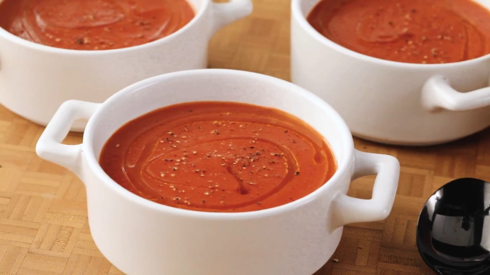

tomatosoup

tomatosoup is a soup made of tomatoes
Things you need to make it
Prep:
- tomatoes =) obviously
- onion
- whole cloves (idk what those are)
- butter and flour
- suge and salt
- and a kitchen to cook
okay start working this two steps in order, you can't fail
- In a stockpot, over medium heat, combine the tomatoes, onion, cloves and chicken broth. Bring to a boil, and gently boil for about 20 minutes to blend all of the flavors. Remove from heat and run the mixture through a food mill into a large bowl, or pan. Discard any stuff left over in the food mill.
- In the now empty stockpot, melt the butter over medium heat. Stir in the flour to make a roux, cooking until the roux is a medium brown. Gradually whisk in a bit of the tomato mixture, so that no lumps form, then stir in the rest. Season with sugar and salt, and adjust to taste.
- Call delivery
- Ask for real food
- Pay
- Enjoy yoourseelff =)